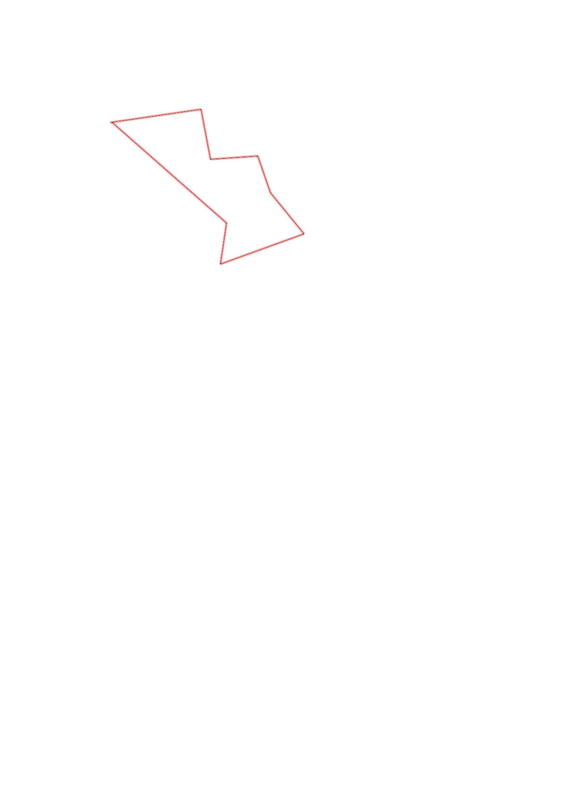
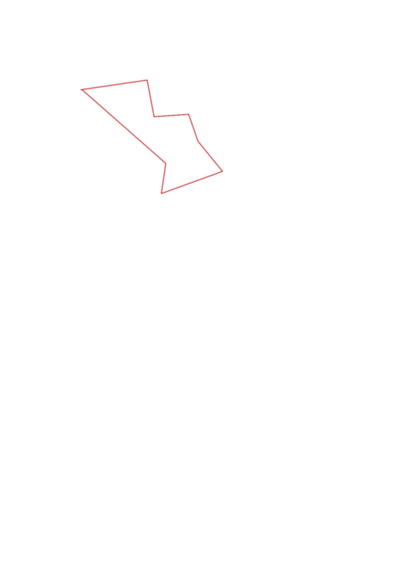

| Control |
Points |
Time Punched |
Distance |
Your Time |
Pace |
Place |
Fastest Time |
Median Time |
% Behind Fastest |
| 33 |
30 |
|
0.49 |
0:03:51 |
07:51 |
7 / 8 |
0:02:06 |
0:03:23 |
83% |
| 32 |
30 |
|
0.27 |
0:04:10 |
15:25 |
4 / 4 |
0:02:47 |
0:03:32 |
49% |
| 57 |
50 |
|
0.25 |
0:03:43 |
14:52 |
3 / 3 |
0:02:27 |
0:02:32 |
51% |
| 52 |
50 |
|
0.21 |
0:11:40 |
55:33 |
7 / 7 |
0:04:11 |
0:04:44 |
178% |
| 63 |
60 |
|
0.28 |
0:05:07 |
18:16 |
7 / 7 |
0:02:58 |
0:03:43 |
72% |
| 43 |
40 |
|
0.47 |
0:07:13 |
15:21 |
3 / 3 |
0:06:31 |
0:07:12 |
10% |
| 95 |
90 |
|
0.22 |
0:05:07 |
23:15 |
3 / 5 |
0:01:04 |
0:05:07 |
379% |
| Finish |
0 |
|
0.81 |
0:11:27 |
14:08 |
1 / 1 |
0:11:27 |
0:11:27 |
0% |
Total Distance Covered: 3.0km
Points Scored: 350
Late Penalty: 0
Final Score: 350
Total Time: 0hours 52minutes 18seconds
Efficiency: 116.67 points/km
 
